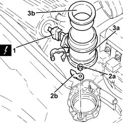

1056B10 AIR FLOW METER - R + R
- Path
- Procedures > 10 ENGINE UNIT > 1056 PETROL INJECTION SYSTEM > 1056B MULTI-POINT INJECTION SYSTEM (MPI) > 1056B10 AIR FLOW METER - R + R
- Kind
- repair procedure (removal / refitting; the operation number is the code)
- Applies to
- engines: 3.2 V6; all production periods
- Interactive page
- https://sloeber94.github.io/elrnDB-aGt/en/#/125002598
Applies to: engines: 3.2 V6; all production periods
 Removing
Removing
 Refitting
RefittingEnsure that the ignition key is in the OFF position, then disconnect the negative battery terminal (-).
Name | Connector | |
|---|---|---|
- | Battery |
Proceed with removal
Op. 1048A28 VACUUM AIR CIRCUIT RESONATOR PIPE - R+R
1. Disconnect the electrical connection from the air flow meter.
2. Undo the nuts (2s) and remove the brackets (2b) securing the air flow meter to the aiar filter cover.
Name | Connector | |
|---|---|---|
1 | Air flow meter |
3. Remove the air flow meter (3a), complete with hose (3b).

Applies to: engines: 3.2 V6; all production periods
Refitting
RemovingRefit the air flow meter in its seating complete with hose, then secure it using the brackets and nuts.
Connect the electrical connection to the air flow meter.
Proceed with refitting
Op. 1048A28 VACUUM AIR CIRCUIT RESONATOR PIPE - R+R.
Connect the negative (-) battery terminal